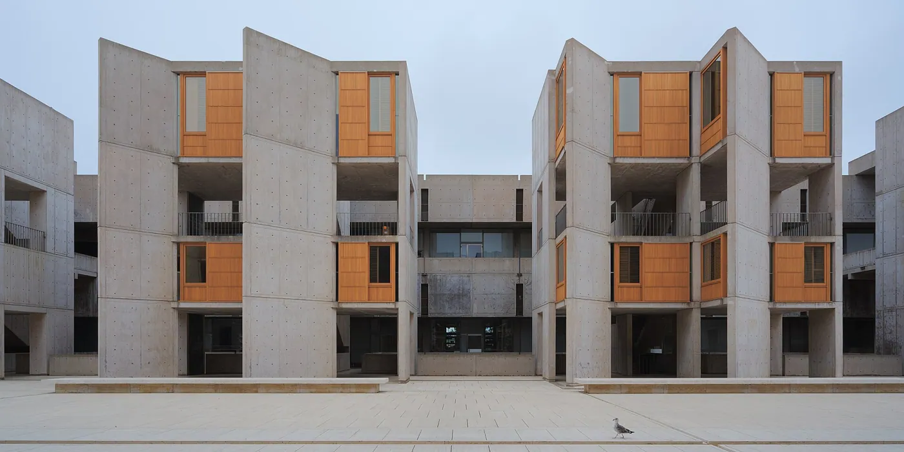
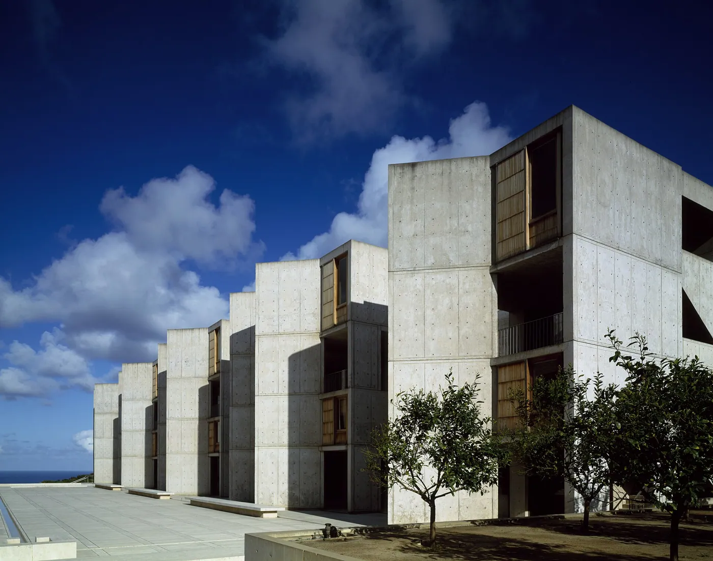
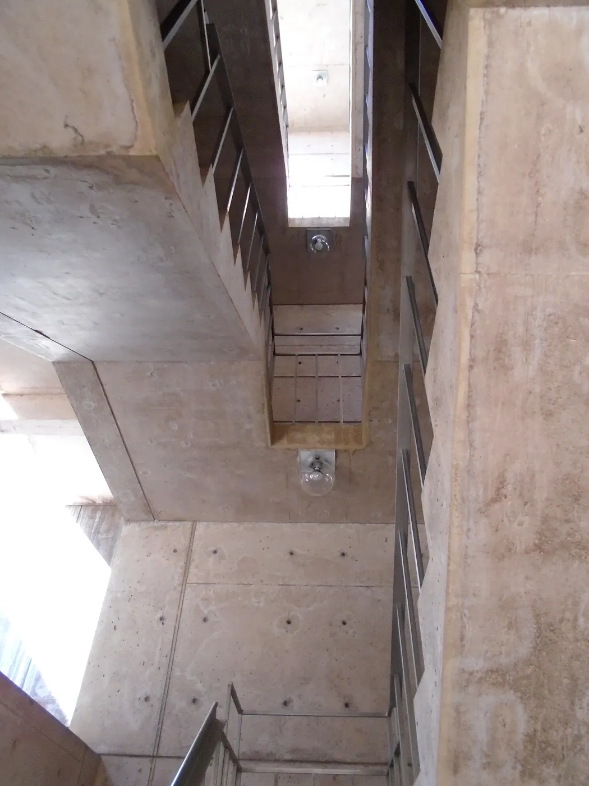
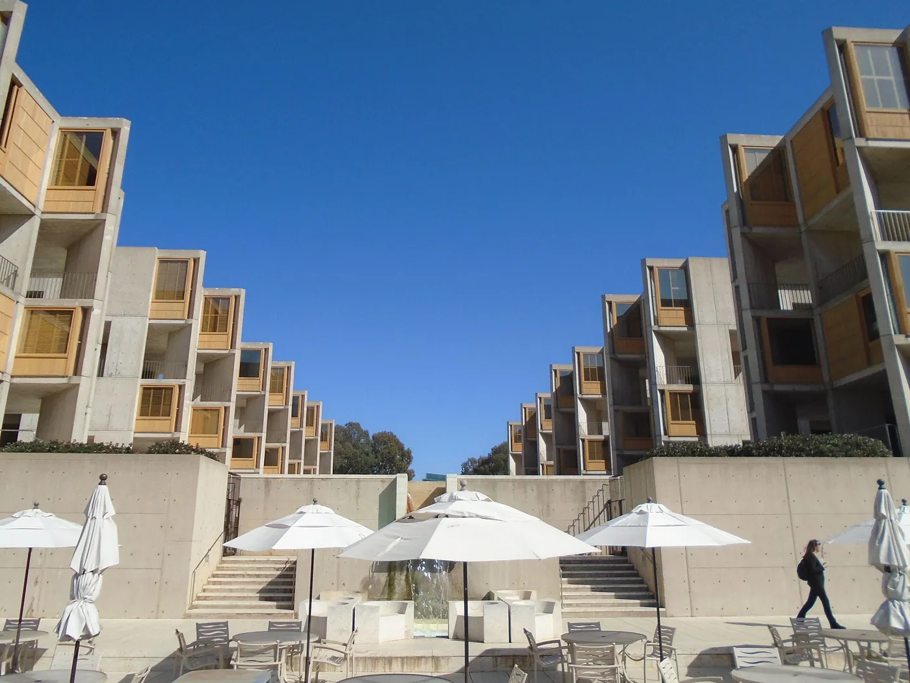

1/8 · Exterior · Salk Institute for Biological StudiesPhoto: Jason Taellious · CC BY-SA 2.0 · source

2/8 · Exterior · The Salk Institute for Biological Studies is a famous modernist design by Louis Kahn , built in 1966Photo: Daniel L. Lu (user:dllu) · CC BY-SA 4.0 · source3/8 · Exterior · Salk Institute from interior courtyard in La Jolla, CAPhoto: Carol M. Highsmith · Public domain · source4/8 · ExteriorPhoto: Beyond My Ken · CC BY-SA 4.0 · source

5/8 · InteriorPhoto: Beyond My Ken · CC BY-SA 4.0 · source

6/8 · InteriorPhoto: Beyond My Ken · CC BY-SA 4.0 · source

7/8 · Detail · Detail of the Salk Institute for Biological Studies , a modernist design by Louis Kahn, built in 1966Photo: Daniel L. Lu (user:dllu) · CC BY-SA 4.0 · source8/8 · Detail · Some chairs and a table at the Salk Institute for Biological Studies Photo: Daniel L. Lu (user:dllu) · CC BY-SA 4.0 · source